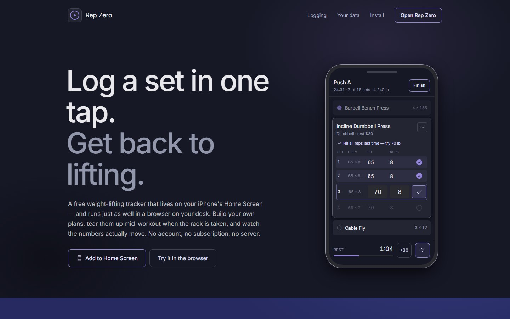

Rep Zero.
A free lifting tracker that installs on an iPhone as a PWA. No account, no server, no network calls. Every set you log stays in the phone’s IndexedDB.

Log a set in one tap.
Build your own plans, change them mid-workout when the rack is taken, and see the numbers go up over time. It works with no signal, which matters because a lot of gyms are in basements.
Mostly I wanted to build a PWA and find out how close to a real app it could feel without going through the App Store. A lifting log was a good test: it has to work in a basement with no signal, and it has to be quick enough to use between sets.
How it works.
Rep Zero is a Vite and React PWA. The service worker (vite-plugin-pwa) makes it installable and offline, and Dexie wraps IndexedDB so every set, plan and history row lives on the device. If the app isn’t running standalone you get an install prompt. You can skip it and look around in the browser, but the skip only lasts for the session.
Five tabs (Today, Plans, Library, History, Progress) plus Settings, and an active workout view that takes over the whole screen. Numbers only go in through the keypad sheet, and a set needs both a weight and a rep count, so bodyweight lifts get an explicit 0 instead of a blank.
The build is a folder of static files: landing page at /, app at /app/, with the manifest served on both so Add to Home Screen works from either. It has to be on HTTPS or the service worker won’t register and the app can’t be installed. There is no cloud copy, so Export all data (JSON) in Settings is the only backup.
The styling is one CSS file of tokens (the Nocturne design system). No colour, radius or shadow is written anywhere else.
Lessons.
- Going without a server removed accounts, billing, sync and outages all at once. It was a product decision more than a technical one.
- iOS can evict storage for apps you haven’t opened in a while. With no cloud copy, the export button is the backup, so it can’t be an afterthought.
Try it.
Open it in Safari, tap Share, then Add to Home Screen, and open Rep Zero from there. Or just look around in the browser.